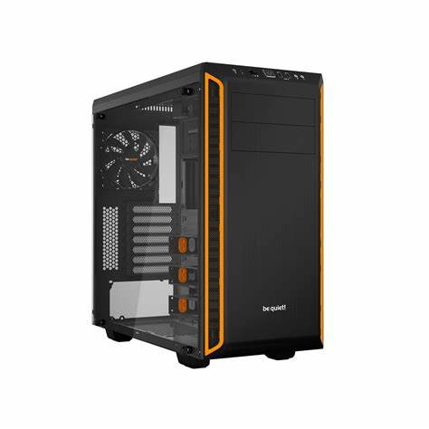
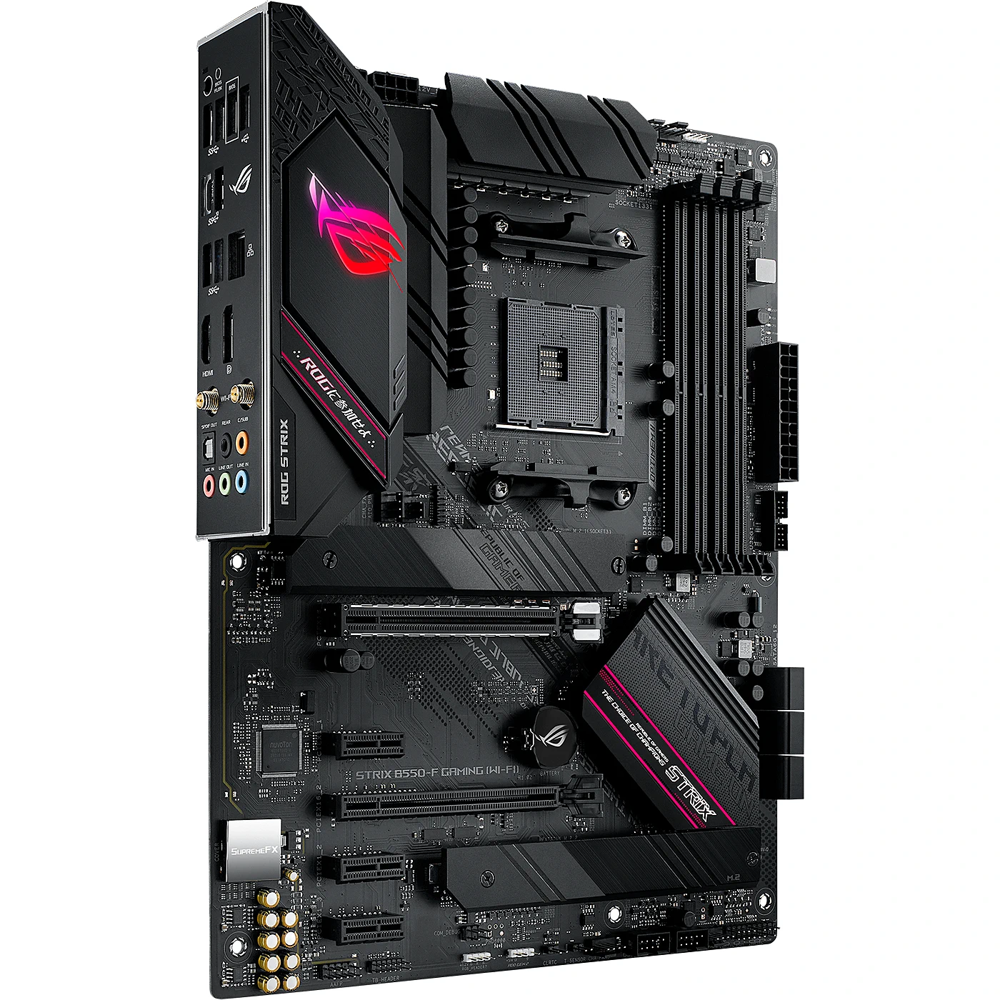
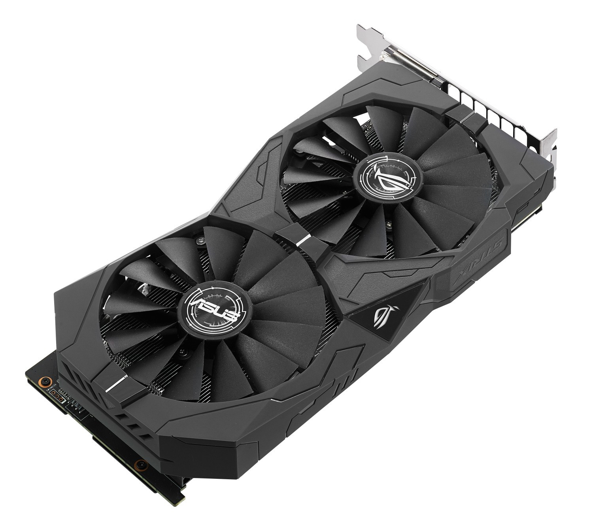
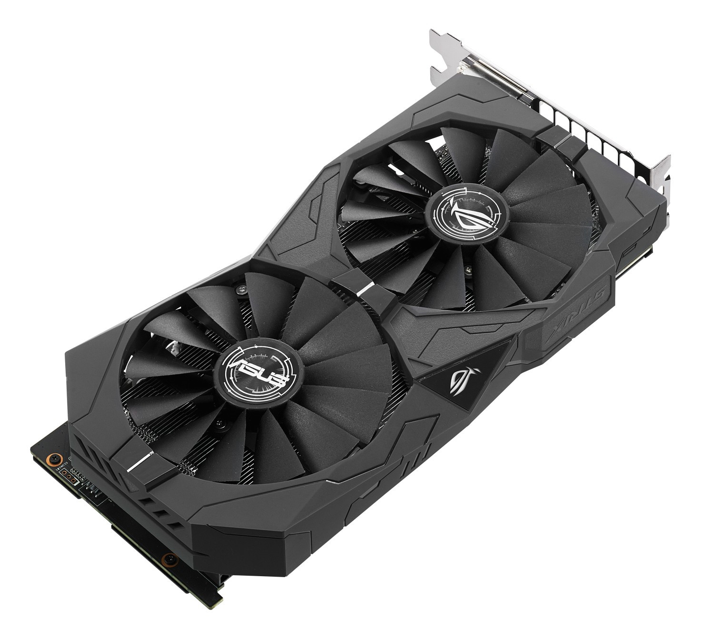
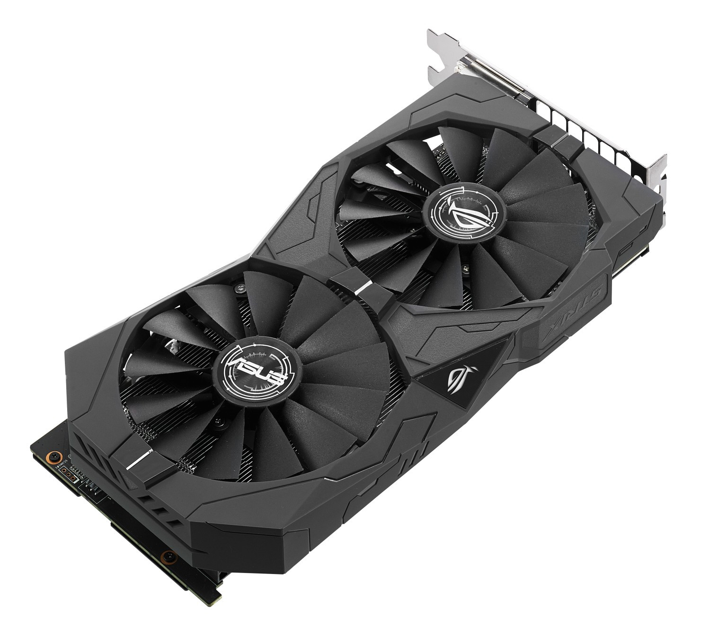

Today im gonna be showing and telling you how i built my first pc!
1.Finding The parts -
Finding and getting the parts was the hardest and the longest thing when i was building my pc,
it was really hard to find the parts that were compatible with each other and that fit my budget.
When i did find all the parts they took forever to ship and some of them were outdated so i had to order different parts and wait even more.



2.Building The Pc - Building the pc was really stressfull beacause i hadn't done anything like that before and i was afraid i would mess everything up.
1.step was installing the cpu on the motherboard, wich wasn't that hard but my hand kept shaking and that made it harder than in should be.
2.step was installing the M.2 drive wich was easier than i expected, beacause i just had to stick it in and screw it.
3.step was was mounting the cpu fan on the cpu, this was easy because the thermal paste was pre-applied so i just had to screw the fan in.
4.step was mounting the motherboard to the case.
5.step was mounting the graphics card to the motherboard and screwing it in.
6.step was plugging in all of the wires in the power supply and mounting it in the pc case.
7.step was wiring everything wich was by far the hardest part of building the pc, it was hard because i didnt know where to plug everything in, and the tutorials didnt really help.
3.BIOS & Windows - The 3rd and final step was updating the bios and installing windows,
wich was supposed to be easy but i messed up while installing windows and beacause of that i'am gonna have to do it again.
Updating the BIOS went well and i had no problems with that.

.jpeg) 
